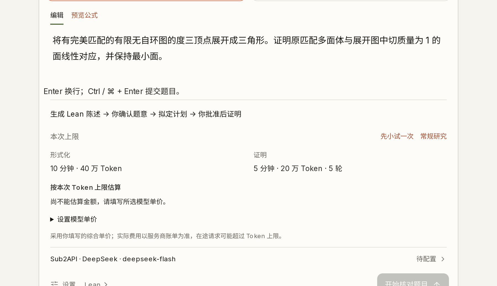

从数学问题到 Lean 证明
用自然语言或 TeX 提出问题，
核对 Lean 陈述，跟进证明，保留源码与验收记录。
浏览器中即开即用，无需安装 Lean。
内测期间平台费用 ¥0，自备模型 API Key。
在工作台推进一道题
原题、形式化陈述、证明尝试与验收结果，保存在同一份研究记录中。
给出假设与目标
输入自然语言、TeX，或带入未完成的 Lean 草稿。
核对陈述与计划
确认要证明什么，设置时间和 Token 预算，再开始尝试。
跟进证明与验收
查看候选和诊断，下载源码与报告，或继续未完成的研究。


展开 Lean 源码与诊断原题与草稿 · 固定环境 · 编译反馈
原题与草稿
展开题目陈述与证明源码。
固定证明环境
使用 Lean 标准库或固定的 Mathlib。
查看 Lean 诊断
对照反馈，逐步检查每一次修改。

先核对陈述，再进入证明
Lean 检查形式化后的命题。假设与目标是否表达原意，由你确认。
选择你的研究起点
网页适合条件明确、结论清楚的单文件数学任务。
从数学命题开始
用自然语言或 TeX 写出对象、假设与结论。可从加零模板起步。
准备命题草稿继续 Lean 草稿
保留 import、定理声明和未完成证明，在固定 Mathlib 环境继续。
打开 Lean 模板
登录后会带入所选模板与环境，准备草稿不调用模型。
试着核对这两个目标
确认后查看证明回放；需要修改，就留在陈述审核。
加零交互示例，不发起研究。
对任意自然数，证明在左边或右边加零，结果都不变。
Tutorial.add_zeron + 0 = nTutorial.zero_add0 + n = n
两个目标尚未确认，证明阶段还未开放。
证明过程，逐步展开
对任意自然数 n，证明 n + 0 = n 与 0 + n = n。切换步骤，查看候选、Lean 反馈与最终验收。
namespace Tutorialtheorem add_zero (n : Nat) : n + 0 = n := by rfltheorem zero_add (n : Nat) : 0 + n = n := by rflend Tutorial还需证明左侧加零
add_zero 可由 rfl 完成；zero_add 需要已有引理。
n : Nat
⊢ 0 + n = n下一份候选使用 Nat.zero_add n。
namespace Tutorialtheorem add_zero (n : Nat) : n + 0 = n := by rfltheorem zero_add (n : Nat) : 0 + n = n := by exact Nat.zero_add nend Tutorialnamespace Tutorialtheorem add_zero (n : Nat) : n + 0 = n := by rfltheorem zero_add (n : Nat) : 0 + n = n := by exact Nat.zero_add nend Tutorial每份成果，都能核对依据
官方通过与本地验收分别记录，原始研究归属随源码与证据保留。
Lean-Eval 官方通过
核对官方结果Lean 证明体节选Submission.lean
by
exact Helpers.rpow_from_nat_power (NumberField.house α) _
(NumberField.house_nonneg α) (Helpers.argument_card_pos α)
(Helpers.house_power_lower_bound α α_int α_ne_zero α_not_rootOfUnity)查看全部官方验收记录
| 题目与领域 | 原始研究归属 | 验收与源码 |
|---|---|---|
Sunflower lemma向日葵引理的改进界 · 组合数学 | DeepScientist Math + GPT-6.1 (gpt-6.1-sol) | |
Lorentzian polynomialsLorentzian 多项式 · 代数组合 | DeepScientist Math + GPT-6.1 (gpt-6.1-sol) | |
Optimal paper Möbius band纸带 Möbius 环的长宽比下界 · 几何 | DeepScientist Math + GPT-6.1 (gpt-6.1-sol) | |
Algebraic integers代数整数：λ_SSS 的上界 · 代数数论 | DeepScientist Math + GPT-6.1 (gpt-6.1-sol) | |
Dimitrov代数整数的 house 下界 · 数论 | DeepScientist Math + GPT-6.1 (gpt-6.1-sol) | |
Hopf–Rinow测地完备与度量完备 · 微分几何 | DeepScientist Math + GPT-6.1 (gpt-6.1-sol) | |
Fractional expectation thresholds分数期望阈值 · 概率组合 | DeepScientist Math + GPT-6.1 (gpt-6.1-sol) | |
Equiangular lines固定夹角等角线 · 离散几何 | DeepScientist Math + GPT-6.1 (gpt-6.1-sol) | |
Rademacher & Enflo typeRademacher 型与 Enflo 型的一致性 · 泛函分析 | DeepScientist Math + GPT-6.1 (gpt-6.1-sol) | |
Unit conjecture群环单位猜想 · 代数 | DeepScientist + GPT-5.6 |
试验你的证明方法
固定题目、环境、模型与预算，比较不同策略和协作方式的结果。
五个研究组件
选择下一步任务
选择就绪任务，决定继续、重试或停止，结合路线与共享预算安排尝试。
- 输入
- 研究状态 · 候选操作 · 共享预算
- 输出
- 下一步操作 · 有序就绪任务
M3 · 搜索接口
M5 组织协作；研究循环依次经过 M3 搜索、M4 上下文、M1 构造与 M2 检查，再将反馈交回 M3。集成后的证明交给 S3，对完整原题独立验收。
S3独立验收
集成后的证明须在固定环境中通过 Lean 对完整原题的检查。局部检查与模型的完成消息均不构成最终验收。
M3 → M4 · 根据就绪任务，整理下一步所需的上下文。

研究模块与独立验收